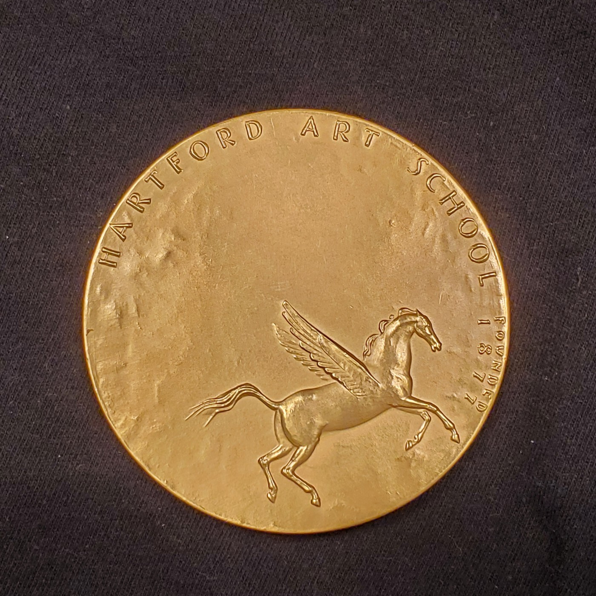
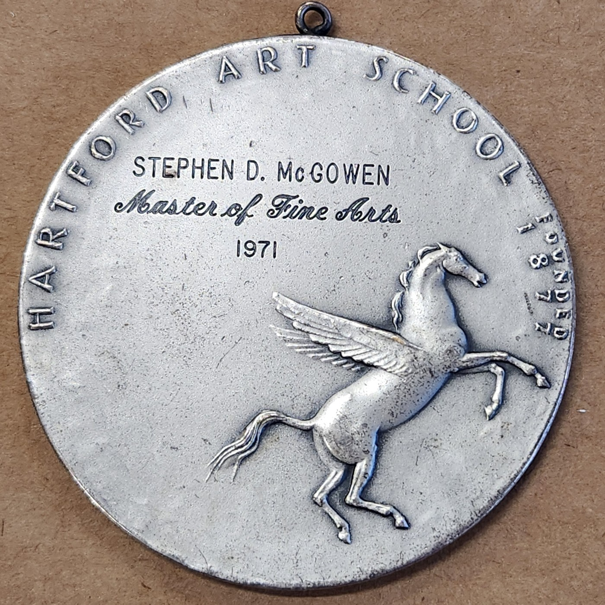
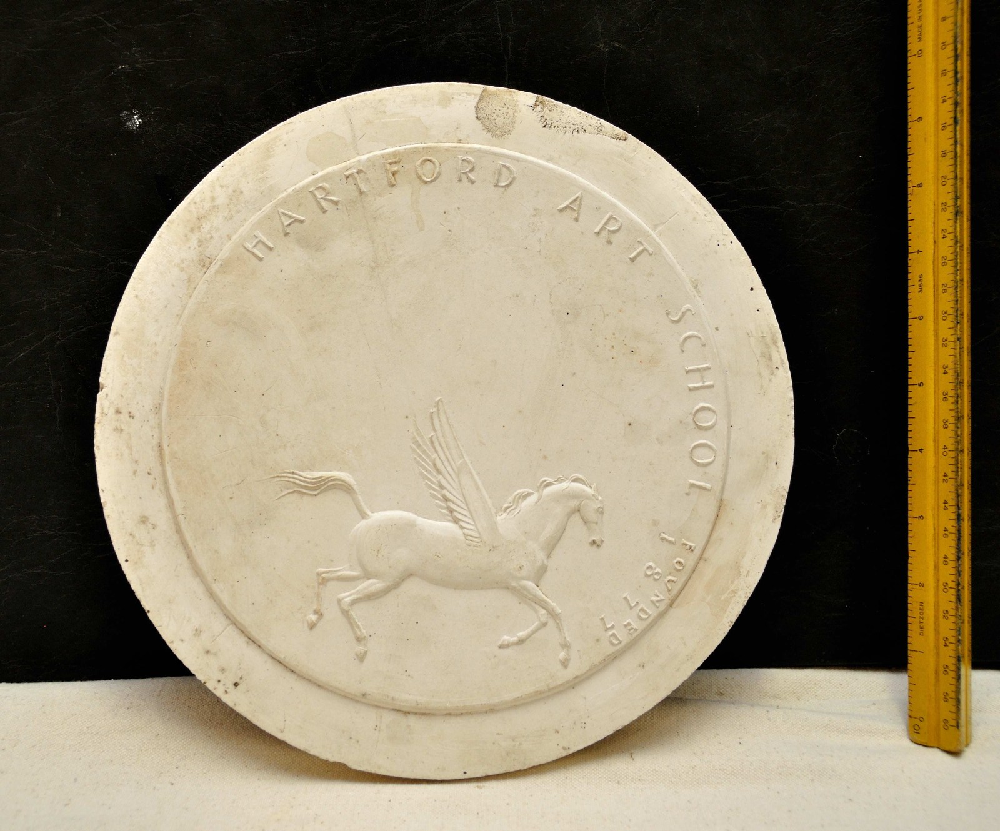
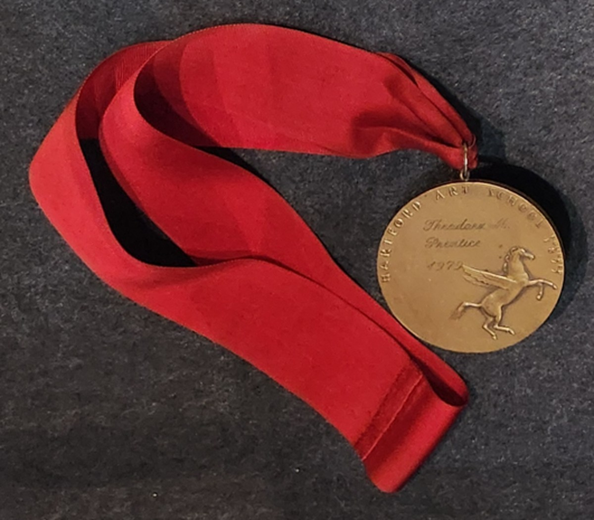
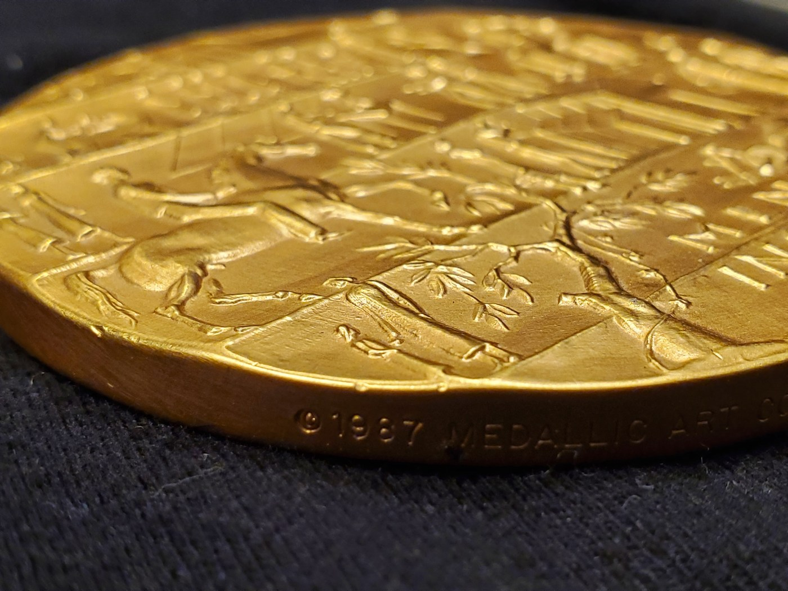

75th anniversary medal · 1952
Hartford
Art School
Created for the school's 75th anniversary, Kreis's medal joins Pegasus—the emblem of artistic inspiration—with a panorama of teaching, making, and community.
- Designer
- Henry Kreis
- Occasion
- 75th anniversary
- Producer
- Medallic Art Company
- Catalog
- 1952-014
Documented variants
Gold- and silver-plated awards
Use the arrows to compare both sides of each documented finish.


Medal photographs from the Kreis family collection and Hartford Art School archive material.
The commission
Seventy-five years of art education
The Hartford Art School was founded in 1877 as the Hartford School for Decorative Arts. Kreis designed this medal in 1952 to mark its 75th anniversary.
That year, graduating students received medals inscribed with their names and graduation years. The school considered the medal to have greater lasting value than a paper certificate. Kreis had a direct connection to the institution as a faculty member.
The design
Inspiration becomes work
Pegasus dominates the obverse beneath the inscriptions HARTFORD ART SCHOOL and FOUNDED 1877. The winged horse gives the anniversary medal an emblem of imagination and creative energy.
The reverse unfolds across horizontal registers filled with students, teachers, families, architecture, a mounted figure, trees, and artists' tools. Its Latin motto, MENS INSPIRET OPUS, may be read as “May the mind inspire the work.”
This kind of story-telling composition is a narrative relief. It resembles the narrative relief of Kreis's The Three Fates medal, but tells a different story. The earlier medal follows the cycle of life through death; the Hartford composition turns the same panoramic method toward education, community, and creative work without ending in death.
Development and use
From plaster to presentation


Plaster and ribbon-mounted medal photographs supplied from family and archival material.
An enduring award
The design after 1952
The silver-plated example is engraved for Stephen D. McGowen, Master of Fine Arts, 1971. A complete bronze example remains attached to its broad red ribbon and bears a 1979 presentation inscription.
The graduation tradition continued into the late 1970s. The Dean later wore a gold version during graduation, while an original ribbon-mounted medal was displayed to honor the tradition. These later dates belong to individual awards, not to Kreis's original 1952 design.
Gold-plated variant
A thicker 1987 board award

Three overlapping views preserve the complete inscription: “© 1987 MEDALLIC ART CO.—DANBURY, CT.—BRONZE 24K GOLD-PLATED.”
The edge establishes this specimen as a later Medallic Art Company production in gold-plated bronze. It is 1/8 inch thicker than the medals presented to graduates and weighs 167.2 grams, compared with 126.8 grams for the bronze version.
Medallic Art Company's final production in the 1980s honored board members who made an extraordinary impact on the school. This example was likely presented to a member of the Hartford Art School Board of Trustees. The 1987 date should not be mistaken for the date of Kreis's original design.
Recorded details
Medal details
- Design year
- 1952
- Occasion
- Hartford Art School 75th anniversary
- School founded
- 1877
- Designer
- Henry Kreis
- Producer
- Medallic Art Company
- Catalog number
- 1952-014
- Diameter
- Approximately 2 3/4 inches
- Plaster diameter
- Approximately 10 inches
- Finishes shown
- Bronze; silver plated; 24K gold-plated bronze
- Bronze weight
- 126.8 g
- Gold-plated weight
- 167.2 g
- Gold-plated thickness
- 1/8 inch thicker than graduate medals
- Motto
- Mens inspiret opus
Research sources
School and object records
- Medal, edge, ribbon, and plaster photographs supplied by Karl Kreis from family and Hartford Art School archival material.
- Karl Kreis, HGK Display Case Content, Hartford School of Art Medal notes.
- Hartford Art School: About
- University of Hartford Archives: Hartford Art School collection
- Medal Artists: Henry Kreis